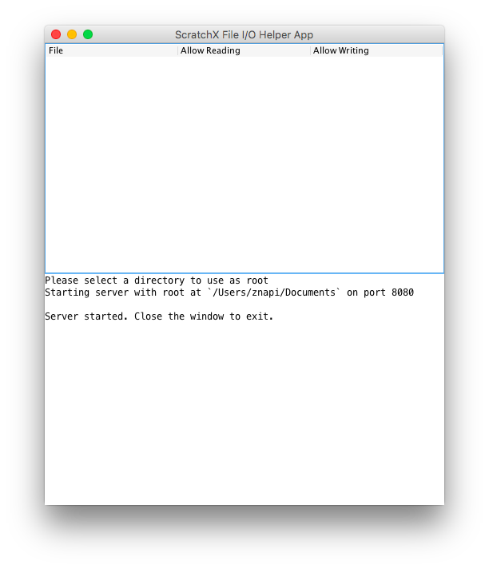
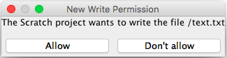
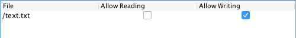

Secure Version of the Helper App
See here for why the normal version is technically not safe.
This version of the helper app allows you to deny a Scratch project permission to read or write a file. While exploring ways to make a secure version, I decided to release a version for people who are using the File I/O extension with a project they don't trust, even though this version is not ideal for a release.
How to Use
First, follow the same steps here.
Instead of just a plain window with text on it, the window should look like this:
The empty white space in the top half is where you will see and edit file permissions in a list. They don't appear until the project requests to read or write a file.
When a project tries to read or write a file for the first time, the helper app will pop up a dialog asking you for permission that looks like this:
Click allow to grant the permission, and don't allow to deny the project that permission.
Once you have clicked allow or don't allow, in the top part of the helper app's window a new item will appear that looks like this:
You can click on the check boxes to change that permission. Permissions that have not been asked for before cannot be changed, so if a checkbox is unchecked and clicking on it doesn't change it, it is because the project hasn't needed to perform that action on that file yet.
Play with it a little in ScratchX to get a better feel for how it works.
Drawbacks
Here are some drawbacks this version of the helper app has that can make it undesireable to use, and why this version is not ideal for a release.
Helper app window must always be visible
You can't maximize/fullscreen your browser window with ScratchX with this version of the helper app because the helper app window needs to be visible at all times. Why? The dialogs it pops up asking for permission can't take the focus away from your browser window, so if you have the helper app hidden behind your browser, you won't see the dialogs pop up.
Projects can't accurately detect file permissions
A project can't accurately tell what the read/write permissions of a file are, which can cause problems if it needs to read or write a file.
File permissions must be set every time the helper app is restarted
Setting the same permissions each time you use a project would probably get annoying. There is no way to load a set of permissions into it on startup.
No console mode
For most users this will not matter, but this version does not have a working console mode.